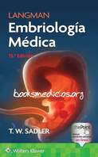
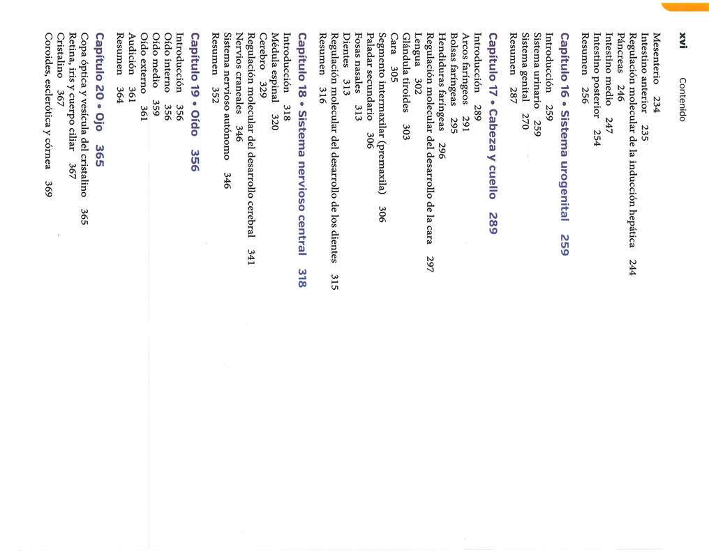
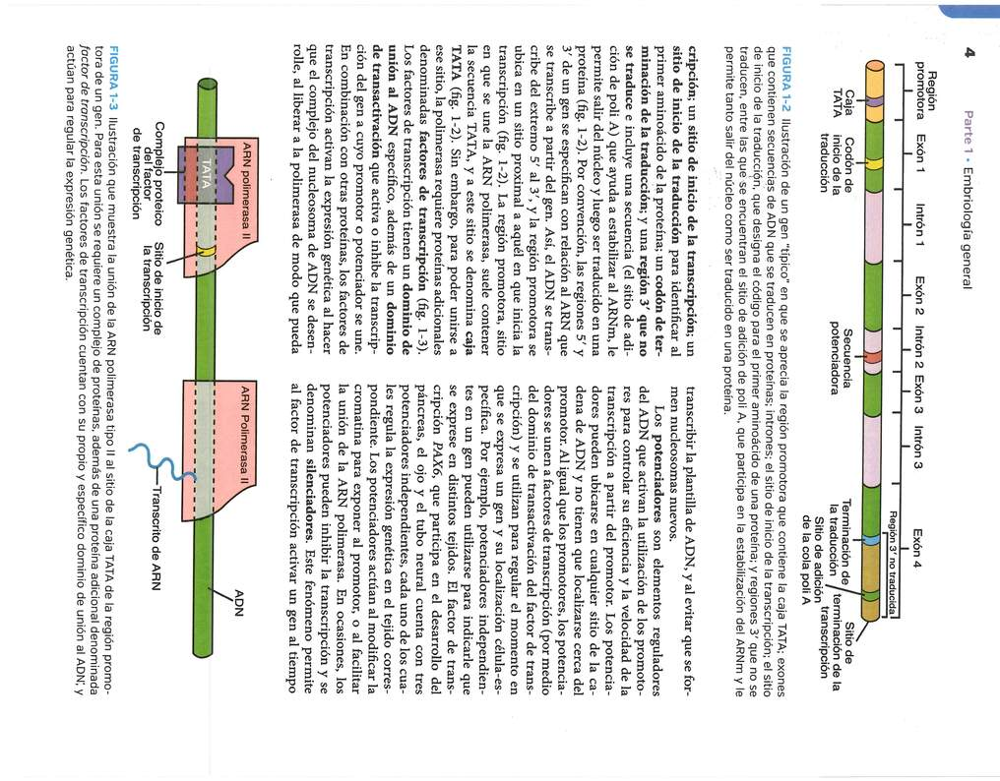
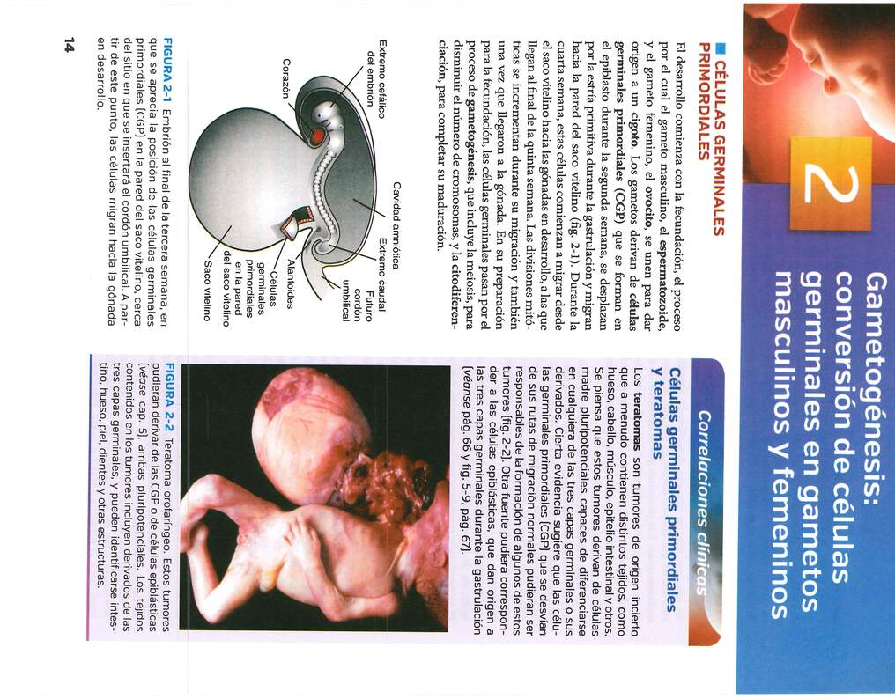
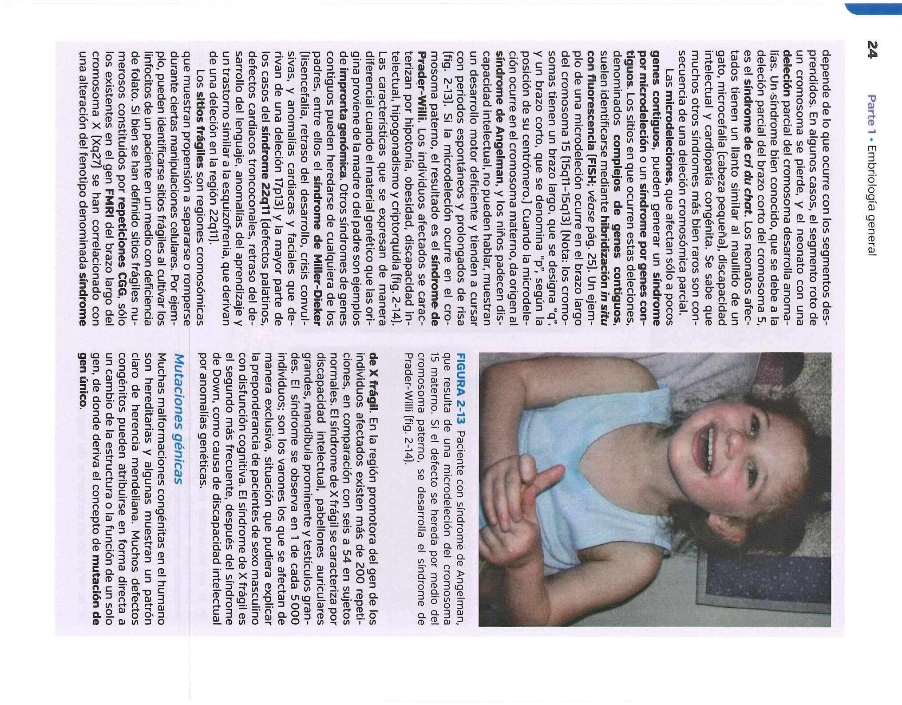
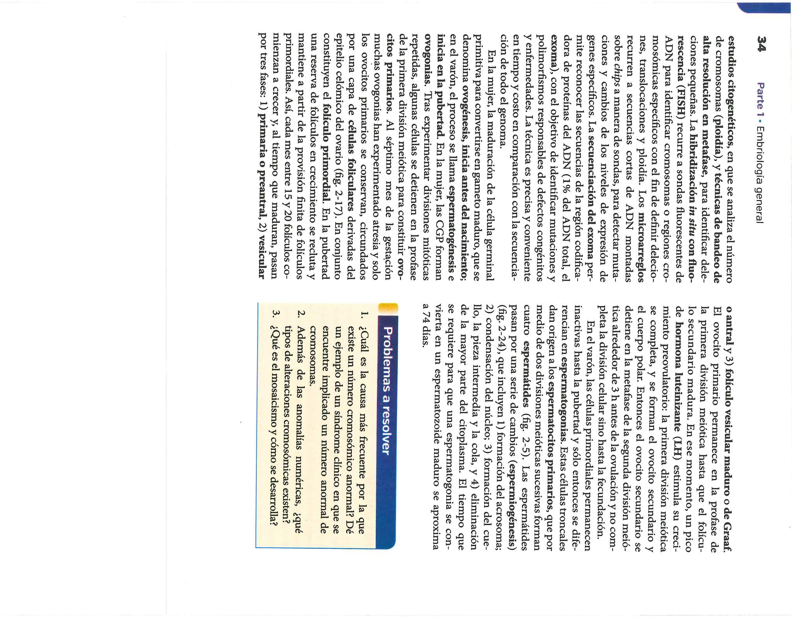
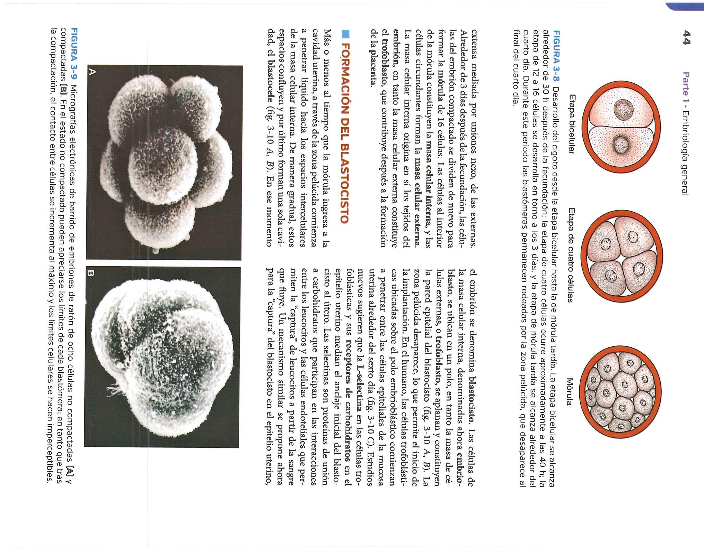
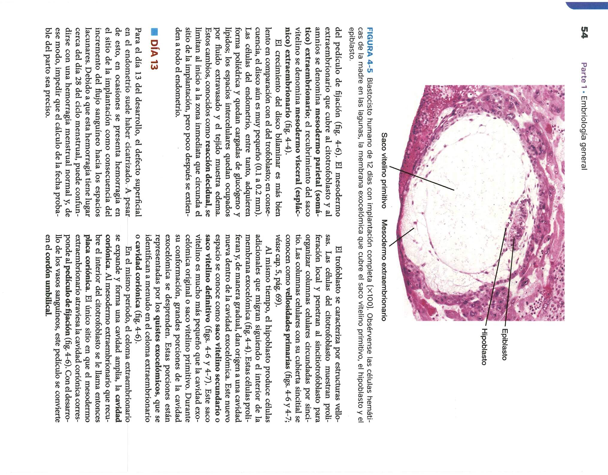

Teoría Extensa, Banco de Preguntas y Láminas del Libro
La embriología abarca el estudio de los cambios estructurales y funcionales que ocurren desde la fertilización hasta el nacimiento. Durante la gametogénesis, las células germinales primordiales (CGP) migran desde el epiblasto hacia la pared del saco vitelino y luego hacia las gónadas en desarrollo. Este proceso incluye la gametogénesis femenina (ovogénesis) y masculina (espermatogénesis), mediante las cuales se reduce la dotación cromosómica de diploide (46, 2n) a haploide (23, 1n) a través de la meiosis.

Durante la meiosis I ocurre el entrecruzamiento o *crossing over*, garantizando la variabilidad genética. Alteraciones en la disyunción cromosómica pueden originar aneuploidías como la trisomía 21 (Síndrome de Down) o el síndrome de Turner (45, X).
Tras la liberación del ovocito secundario detenido en metafase II, la fecundación ocurre habitualmente en la región ampolar de la trompa uterina. Las fases de la fecundación incluyen: 1) Penetración de la corona radiada, 2) Penetración de la zona pelúcida, y 3) Fusión de las membranas celulares del ovocito y del espermatozoide.

El cigoto inicia una serie de divisiones mitóticas (segmentación). A las 72 horas se forma la mórula (16 células). Tras la formación del blastocele, la estructura pasa a llamarse blastocisto, compuesto por el embrioblasto (masa celular interna) y el trofoblasto (masa celular externa). Aproximadamente en el día 6, el trofoblasto comienza la implantación en el endometrio.

En el día 8, el trofoblasto se diferencia en dos capas: el citotrofoblasto y el sincitiotrofoblasto. Simultáneamente, el embrioblasto se diferencia en el disco bilaminar formado por el epiblasto y el hipoblasto. El sincitiotrofoblasto erosiona los capilares maternos estableciendo la circulación útero-placentaria primitiva.

Aparecen la cavidad amniótica, el saco vitelino primario y secundario, y el mesodermo extraembrionario, el cual se ahueca para formar la cavidad coriónica. El pedículo de fijación conectará el embrión con la placenta en desarrollo.

El acontecimiento crucial de la tercera semana es la gastrulación, proceso mediante el cual se forman las tres capas germinativas primarias: Ectodermo, Mesodermo y Endodermo. Inicia con la aparición de la línea primitiva en la región dorsal del epiblasto.

Las células del epiblasto invaginan desplazando al hipoblasto para formar el endodermo embrionario, mientras que otras se sitúan en el medio formando el mesodermo. Las células remanentes en la superficie forman el ectodermo. Se forma también la notocorda, la cual ejerce la inducción neural necesaria para iniciar la neurulación.

Durante la organogénesis, las tres capas germinativas dan origen a tejidos y órganos específicos:

1. ¿Qué proceso meiótico es responsable de la variabilidad genética entre gametos?
2. ¿En qué fase de la meiosis se detienen los ovocitos primarios desde el desarrollo fetal hasta la pubertad?
3. ¿Qué estructura secreta la hormona Gonadotropina Coriónica Humana (hCG) para mantener el cuerpo lúteo?
4. ¿Cuál es el orden correcto de formación del embrión en la primera semana?
5. El sistema nervioso central se origina a partir de:
Todas las imágenes ordenadas cronológicamente: